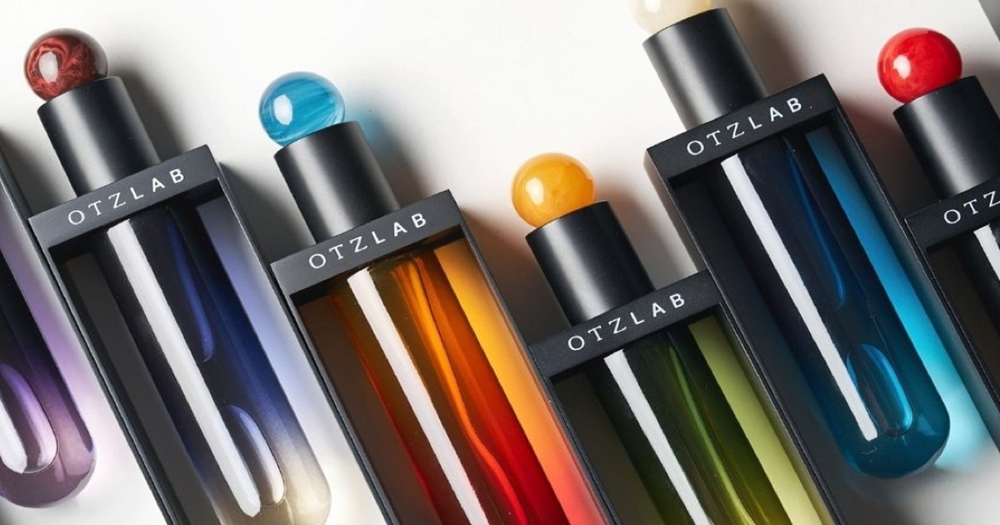

Otzlab x Metapack: флакон духов, подвешенный в металлическом каркасе
Для аромата Otzlab компания Metapack разработала набор упаковочных компонентов, объединяющих нержавеющую сталь, полипропилен (ПП) и смолу.
Конструкция включает крепежную систему, которая подвешивает бутылку вертикально в металлическом каркасе, позволяя легко снять ее.
Основываясь на дизайне, предоставленном брендом, разработка была сосредоточена на ключевой технической задаче: надежно подвесить бутылку в центре рамы, гарантируя, что она